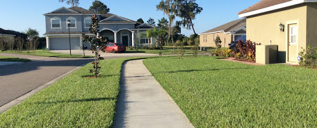

PLANT/SHRUB INSTALLATION
We will install plants and shrubs to make your garden look beautiful! We even let you choose the plants/shrubs so that you can have the garden of your dreams

EDGING
Our services in edging will supply a crisp edge between areas of your garden. Your garden will look freshly cut and impress the neighbors for sure!

SHRUB TRIMMING & REMOVAL
To make sure that your garden is maintained, we provide the services of shrub trimming and removal. Just tell us what shrubs you don't like and we'll take care of that for you!

MULCHING
We will apply a layer of mulch to the surface of an area of soil. Its purpose is any or all of the following: to conserve moisture. to improve the fertility and health of the soil. to reduce weed growth.

LAWN MOWING
With our plethora of lawnmowers, we will be able to cut your lawn in no time!

LAWN CARE
Is your lawn is dire need of a make over? Well this service is for you! After we're done, your lawn will look greener and cleaner than before.
YARD DEBRIS REMOVAL
We will remove the debris from your lawn in a timely manner. With our services, you will have a trash free yard!